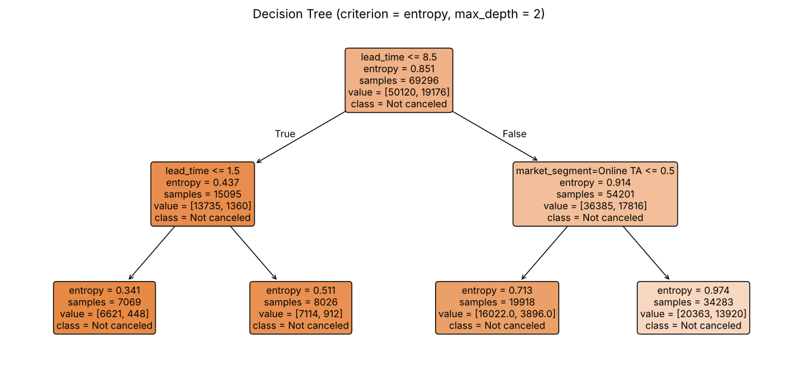
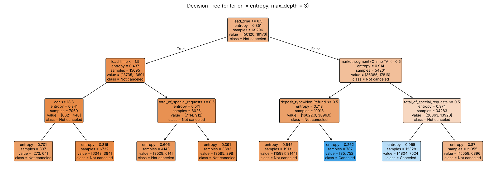
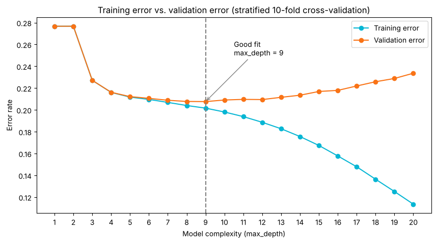
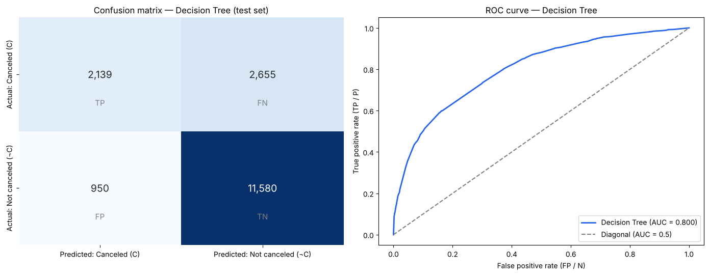
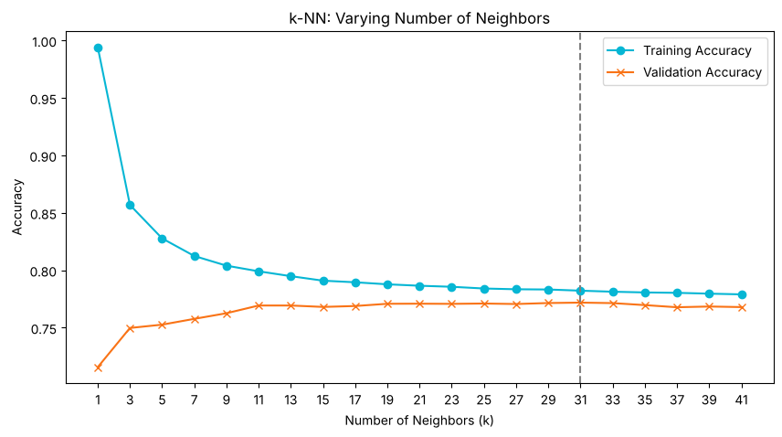
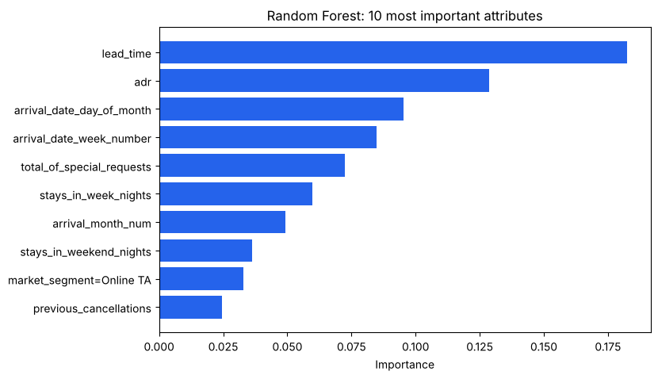
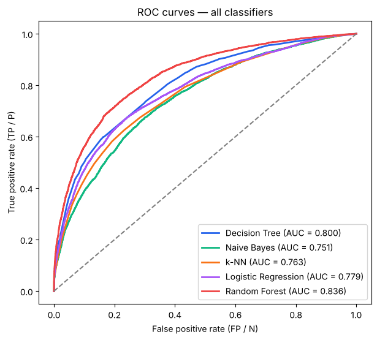

06 — Classification: Predicting Hotel Booking Cancellation
Task: Supervised learning (classification). The training data are accompanied by labels indicating the class each tuple belongs to, and new data is classified based on the model built from the training set.
- Class label attribute:
is_canceled - Classes:
1 = Canceled(positive class) ·0 = Not canceled(negative class)
Process:
- Learning (Induction) — the algorithm builds the model using the training set
- Deduction (Testing) — the model is applied to the test set to predict unknown classes and evaluate accuracy
Classifiers: Decision Tree · Naïve Bayes · k-Nearest Neighbor · Logistic Regression · Random Forest
The data is the final dataset after outlier analysis (notebook 03).
import numpy as np import pandas as pd import matplotlib.pyplot as plt import seaborn as sns from pathlib import Path from sklearn.model_selection import train_test_split from sklearn.tree import DecisionTreeClassifier, export_text, plot_tree from sklearn.metrics import accuracy_score BLUE, CYAN, GREEN, ORANGE = "#2563eb", "#06b6d4", "#10b981", "#f97316" FIG_DIR = Path("../figures") df = pd.read_csv("../data/processed/hotel_bookings_final.csv") print(df.shape)
(86620, 41)
1. Attribute Selection for Classification
Each record contains a set of attributes, one of which is the class label. The model must assign a class to previously unseen records, so it can only use attributes whose values are known when the booking is made.
Attributes whose values are only known after the class label is decided are excluded:
| Excluded attribute | When its value becomes known |
|---|---|
reservation_status, reservation_status_date |
after the outcome (they state it directly) |
assigned_room_type, room_changed |
at check-in |
required_car_parking_spaces |
at arrival |
country |
at check-in for most guests |
realized_revenue |
calculated from is_canceled |
CLASS_LABEL = "is_canceled" NUMERIC = ["lead_time", "arrival_month_num", "arrival_date_week_number", "arrival_date_day_of_month", "stays_in_weekend_nights", "stays_in_week_nights", "adults", "children", "babies", "is_repeated_guest", "previous_cancellations", "previous_bookings_not_canceled", "booking_changes", "days_in_waiting_list", "adr", "total_of_special_requests", "has_agent", "has_company"] CATEGORICAL = ["hotel", "meal", "market_segment", "distribution_channel", "reserved_room_type", "deposit_type", "customer_type"] print(f"Numeric attributes: {len(NUMERIC)} | Categorical attributes: {len(CATEGORICAL)}") df[CATEGORICAL].nunique()
Numeric attributes: 18 | Categorical attributes: 7
hotel 2 meal 4 market_segment 8 distribution_channel 5 reserved_room_type 9 deposit_type 3 customer_type 4 dtype: int64
2. Categorical Attributes
The project requires handling categorical variables during preprocessing. Each categorical attribute is converted into binary attributes (one column per value, 0/1), because scikit-learn requires numeric input.
A decision tree has no need to normalize data.
X = pd.get_dummies(df[NUMERIC + CATEGORICAL], columns=CATEGORICAL, prefix_sep="=", dtype=int) y = df[CLASS_LABEL] print(X.shape) X.columns[18:].tolist()[:10]
(86620, 53)
['hotel=City Hotel', 'hotel=Resort Hotel', 'meal=BB', 'meal=FB', 'meal=HB', 'meal=SC', 'market_segment=Aviation', 'market_segment=Complementary', 'market_segment=Corporate', 'market_segment=Direct']
3. Holdout Method: Training Set and Test Set
The data is randomly partitioned into two independent sets:
- Training set (80%) — for model construction
- Test set (20%) — for accuracy estimation
The partition is stratified, so the class distribution in each set is approximately the same as in the initial data.
X_train, X_test, y_train, y_test = train_test_split( X, y, test_size=0.20, stratify=y, random_state=42) dist = pd.DataFrame({"Training set": y_train.value_counts(normalize=True), "Test set": y_test.value_counts(normalize=True)}) dist.index = ["Not canceled (0)", "Canceled (1)"] print(f"Training set: {len(X_train):,} tuples | Test set: {len(X_test):,} tuples") (dist * 100).round(1)
Training set: 69,296 tuples | Test set: 17,324 tuples
| Training set | Test set | |
|---|---|---|
| Not canceled (0) | 72.3 | 72.3 |
| Canceled (1) | 27.7 | 27.7 |
4. Decision Tree Induction
The tree is constructed in a top-down, recursive, divide-and-conquer manner. On each node, the attribute is selected by information gain (ID3 / C4.5).
Entropy before splitting: $$H(D) = -\sum_{i=1}^{m} p_i \log(p_i)$$
Weighted entropy after splitting on A into v partitions: $$H(D|A) = \sum_{j=1}^{v} \frac{|D_j|}{|D|}\, H(D|A=j)$$
Information gain: $$Gain(A) = H(D) - H(D|A)$$
Note on the tool: scikit-learn always builds binary splits (each node splits into exactly two
children), as in CART. With criterion="entropy", each split is chosen by information gain,
and a continuous attribute is split as $A \le P$ vs. $A > P$.
def entropy(labels): # H(D) = -Σ p_i log2(p_i) p = labels.value_counts(normalize=True) return -(p * np.log2(p)).sum() def conditional_entropy(labels, mask): # H(D|A) = Σ |D_j|/|D| · H(D|A=j) n = len(labels) return sum(len(part) / n * entropy(part) for part in (labels[mask], labels[~mask])) def gain(labels, mask): # Gain(A) = H(D) - H(D|A) return entropy(labels) - conditional_entropy(labels, mask) H_D = entropy(y_train) print(f"|D| = {len(y_train):,} | canceled = {y_train.sum():,} | not canceled = {(y_train == 0).sum():,}") print(f"H(D) = {H_D:.4f} bits")
|D| = 69,296 | canceled = 19,176 | not canceled = 50,120 H(D) = 0.8510 bits
4.1 Continuous-Valued Attribute: Best Split Point for lead_time
- Sort the values of A
- Possible split point: $P = \frac{a_i + a_{i+1}}{2}$
- The point with the maximum information gain is selected as the split-point
- Split: tuples in D satisfying $A \le P$ vs. those with $A > P$
values = np.sort(X_train["lead_time"].unique()) split_points = (values[:-1] + values[1:]) / 2 gains = pd.Series([gain(y_train, X_train["lead_time"] <= P) for P in split_points], index=split_points) P = gains.idxmax() print(f"Possible split points tested: {len(split_points)}") print(f"Split-point P = {P} -> Gain = {gains.max():.4f}\n") mask = X_train["lead_time"] <= P for name, part in [(f"D1: lead_time <= {P}", y_train[mask]), (f"D2: lead_time > {P}", y_train[~mask])]: print(f"{name}: |Dj| = {len(part):,} | canceled = {part.sum():,} " f"| p = {part.mean():.3f} | H = {entropy(part):.4f}") H_D_A = conditional_entropy(y_train, mask) print(f"\nH(D|lead_time) = {H_D_A:.4f}") print(f"Gain(lead_time) = {H_D:.4f} - {H_D_A:.4f} = {H_D - H_D_A:.4f}")
Possible split points tested: 471 Split-point P = 8.5 -> Gain = 0.0412 D1: lead_time <= 8.5: |Dj| = 15,095 | canceled = 1,360 | p = 0.090 | H = 0.4368 D2: lead_time > 8.5: |Dj| = 54,201 | canceled = 17,816 | p = 0.329 | H = 0.9136 H(D|lead_time) = 0.8097 Gain(lead_time) = 0.8510 - 0.8097 = 0.0412
4.2 Information Gain vs. Gain Ratio
Information gain is biased towards attributes with a large number of values. Gain ratio normalises it (used by C4.5):
$$SplitInfo(D|A) = -\sum_{j=1}^{v} \frac{|D_j|}{|D|}\log\!\left(\frac{|D_j|}{|D|}\right) \qquad GainRatio(A) = \frac{Gain(A)}{SplitInfo(A)}$$
def split_info(mask): # SplitInfo(D|A) = -Σ |D_j|/|D| · log2(|D_j|/|D|) w = mask.value_counts(normalize=True) return -(w * np.log2(w)).sum() candidates = { f"lead_time <= {P}": X_train["lead_time"] <= P, "market_segment = Online TA": X_train["market_segment=Online TA"] == 1, "deposit_type = Non Refund": X_train["deposit_type=Non Refund"] == 1, "total_of_special_requests = 0": X_train["total_of_special_requests"] == 0, "previous_cancellations > 0": X_train["previous_cancellations"] > 0, "hotel = City Hotel": X_train["hotel=City Hotel"] == 1, } rows = [] for name, m in candidates.items(): g = gain(y_train, m) rows.append({"split": name, "|D1|": int(m.sum()), "H(D|A)": conditional_entropy(y_train, m), "Gain(A)": g, "SplitInfo(A)": split_info(m), "GainRatio(A)": g / split_info(m)}) attr_table = pd.DataFrame(rows).set_index("split").sort_values("Gain(A)", ascending=False) attr_table.round(4)
| |D1| | H(D|A) | Gain(A) | SplitInfo(A) | GainRatio(A) | |
|---|---|---|---|---|---|
| split | |||||
| lead_time <= 8.5 | 15095 | 0.8097 | 0.0412 | 0.7562 | 0.0545 |
| market_segment = Online TA | 40998 | 0.8176 | 0.0334 | 0.9756 | 0.0342 |
| deposit_type = Non Refund | 833 | 0.8332 | 0.0177 | 0.0939 | 0.1888 |
| total_of_special_requests = 0 | 34851 | 0.8389 | 0.0120 | 1.0000 | 0.0120 |
| previous_cancellations > 0 | 1339 | 0.8409 | 0.0100 | 0.1376 | 0.0727 |
| hotel = City Hotel | 42551 | 0.8473 | 0.0037 | 0.9621 | 0.0038 |
4.3 A Small Decision Tree (depth = 2)
criterion="entropy" selects splits by information gain, as computed above.
Prediction: majority voting is employed for classifying each leaf.
small_tree = DecisionTreeClassifier(criterion="entropy", max_depth=2, random_state=42) small_tree.fit(X_train, y_train) print(export_text(small_tree, feature_names=list(X_train.columns), show_weights=True)) print(f"Test accuracy: {accuracy_score(y_test, small_tree.predict(X_test)):.3f}")
|--- lead_time <= 8.50 | |--- lead_time <= 1.50 | | |--- weights: [6621.00, 448.00] class: 0 | |--- lead_time > 1.50 | | |--- weights: [7114.00, 912.00] class: 0 |--- lead_time > 8.50 | |--- market_segment=Online TA <= 0.50 | | |--- weights: [16022.00, 3896.00] class: 0 | |--- market_segment=Online TA > 0.50 | | |--- weights: [20363.00, 13920.00] class: 0 Test accuracy: 0.723
4.4 Visualising the Tree
Each node shows: the split test, the entropy H, the number of samples |D|,
the class counts [not canceled, canceled], and the class chosen by majority voting.
fig, ax = plt.subplots(figsize=(16, 7)) plot_tree(small_tree, feature_names=list(X_train.columns), class_names=["Not canceled", "Canceled"], filled=True, rounded=True, impurity=True, fontsize=11, ax=ax) ax.set_title("Decision Tree (criterion = entropy, max_depth = 2)", fontsize=14) fig.savefig(FIG_DIR / "clf_01_tree_plot_tree.png", dpi=150, bbox_inches="tight") plt.show()

4.5 Growing the Tree One More Level (depth = 3)
The depth-2 tree was stopped early (pre-pruning: stop growing the tree early). Because most training tuples are Not canceled, majority voting assigns Not canceled to every depth-2 leaf. Growing one more level produces leaves whose majority is Canceled.
tree_d3 = DecisionTreeClassifier(criterion="entropy", max_depth=3, random_state=42) tree_d3.fit(X_train, y_train) fig, ax = plt.subplots(figsize=(24, 8)) plot_tree(tree_d3, feature_names=list(X_train.columns), class_names=["Not canceled", "Canceled"], filled=True, rounded=True, impurity=True, fontsize=10, ax=ax) ax.set_title("Decision Tree (criterion = entropy, max_depth = 3)", fontsize=14) fig.savefig(FIG_DIR / "clf_02_tree_depth3.png", dpi=150, bbox_inches="tight") plt.show() print(f"Test accuracy (depth 3): {accuracy_score(y_test, tree_d3.predict(X_test)):.3f}")

Test accuracy (depth 3): 0.775
5. Finding the Right Complexity: Cross-Validation
A model should learn patterns that help it predict new records; performing well on the training data alone is not enough.
| Underfitting: too simple | Good fit: suitable complexity | Overfitting: too complex |
|---|---|---|
| Training and validation errors are both high | Validation error is near its lowest point | Training error remains low, but validation error rises |
Cross-validation (k-fold, k = 10):
- Randomly partition the training set into k mutually exclusive subsets of approximately equal size
- At the i-th iteration, use $D_i$ as the validation set and the others as training set
- Stratified cross-validation: the class distribution in each fold is approximately the same as in the initial data
The test set is not used here, so it stays independent for the final accuracy estimate.
Model complexity is controlled by max_depth (pre-pruning).
$$Error\ rate = 1 - accuracy \quad$$
from sklearn.model_selection import StratifiedKFold, cross_validate folds = StratifiedKFold(n_splits=10, shuffle=True, random_state=42) rows = [] for d in range(1, 21): model = DecisionTreeClassifier(criterion="entropy", max_depth=d, random_state=42) scores = cross_validate(model, X_train, y_train, cv=folds, scoring="accuracy", return_train_score=True) rows.append({"max_depth": d, "training error": 1 - scores["train_score"].mean(), "validation error": 1 - scores["test_score"].mean()}) cv_table = pd.DataFrame(rows).set_index("max_depth") cv_table.round(4)
| training error | validation error | |
|---|---|---|
| max_depth | ||
| 1 | 0.2767 | 0.2767 |
| 2 | 0.2767 | 0.2767 |
| 3 | 0.2271 | 0.2271 |
| 4 | 0.2161 | 0.2162 |
| 5 | 0.2117 | 0.2122 |
| 6 | 0.2096 | 0.2106 |
| 7 | 0.2069 | 0.2088 |
| 8 | 0.2040 | 0.2078 |
| 9 | 0.2016 | 0.2076 |
| 10 | 0.1981 | 0.2091 |
| 11 | 0.1938 | 0.2097 |
| 12 | 0.1886 | 0.2095 |
| 13 | 0.1827 | 0.2116 |
| 14 | 0.1756 | 0.2135 |
| 15 | 0.1674 | 0.2169 |
| 16 | 0.1578 | 0.2179 |
| 17 | 0.1479 | 0.2219 |
| 18 | 0.1364 | 0.2258 |
| 19 | 0.1252 | 0.2288 |
| 20 | 0.1136 | 0.2336 |
5.1 Training Error vs. Validation Error
Choose a model that performs well on unseen data — not simply the model with the lowest training error.
best_depth = cv_table["validation error"].idxmin() fig, ax = plt.subplots(figsize=(10, 5)) ax.plot(cv_table.index, cv_table["training error"], marker="o", color=CYAN, label="Training error") ax.plot(cv_table.index, cv_table["validation error"], marker="o", color=ORANGE, label="Validation error") ax.axvline(best_depth, color="grey", ls="--") ax.annotate(f"Good fit\nmax_depth = {best_depth}", xy=(best_depth, cv_table.loc[best_depth, "validation error"]), xytext=(best_depth + 1.5, 0.25), arrowprops=dict(arrowstyle="->", color="grey")) ax.set_xlabel("Model complexity (max_depth)") ax.set_ylabel("Error rate") ax.set_title("Training error vs. validation error (stratified 10-fold cross-validation)") ax.set_xticks(cv_table.index) ax.legend() fig.savefig(FIG_DIR / "clf_03_training_vs_validation_error.png", dpi=150, bbox_inches="tight") plt.show() print(f"Selected max_depth = {best_depth}")

Selected max_depth = 9
5.2 Final Decision Tree
Model construction on the whole training set with the selected max_depth,
then testing once on the independent test set.
dt_model = DecisionTreeClassifier(criterion="entropy", max_depth=best_depth, random_state=42) dt_model.fit(X_train, y_train) y_pred_dt = dt_model.predict(X_test) print(f"max_depth = {best_depth} | leaves = {dt_model.get_n_leaves()}") print(f"Training accuracy: {dt_model.score(X_train, y_train):.3f}") print(f"Test accuracy: {accuracy_score(y_test, y_pred_dt):.3f}")
max_depth = 9 | leaves = 288 Training accuracy: 0.798 Test accuracy: 0.792
6. Model Evaluation: Confusion Matrix
Each cell shows how many records from an actual class were assigned to a particular predicted class. Positive class C = Canceled, negative class ¬C = Not canceled.
| Actual \ Predicted | C | ¬C | |
|---|---|---|---|
| C | True Positives (TP) | False Negatives (FN) | P |
| ¬C | False Positives (FP) | True Negatives (TN) | N |
| P' | N' | All |
from sklearn.metrics import confusion_matrix cm = confusion_matrix(y_test, y_pred_dt, labels=[1, 0]) TP, FN, FP, TN = cm.ravel() cm_table = pd.DataFrame(cm, index=["Actual: Canceled (C)", "Actual: Not canceled (¬C)"], columns=["Predicted: Canceled (C)", "Predicted: Not canceled (¬C)"]) cm_table["Total"] = cm_table.sum(axis=1) cm_table.loc["Total"] = cm_table.sum() cm_table
| Predicted: Canceled (C) | Predicted: Not canceled (¬C) | Total | |
|---|---|---|---|
| Actual: Canceled (C) | 2139 | 2655 | 4794 |
| Actual: Not canceled (¬C) | 950 | 11580 | 12530 |
| Total | 3089 | 14235 | 17324 |
6.1 Classifier Evaluation Metrics
- Accuracy = (TP + TN) / All
- Error rate = (FP + FN) / All
- Sensitivity (recall, true positive recognition rate) = TP / P
- Specificity (true negative recognition rate) = TN / N
- Precision (exactness) = TP / (TP + FP)
- Recall (completeness) = TP / (TP + FN)
- F1-measure (harmonic mean of precision and recall) = 2 × P × R / (P + R)
P, N, All = TP + FN, FP + TN, TP + FN + FP + TN accuracy = (TP + TN) / All error_rate = (FP + FN) / All sensitivity = TP / P specificity = TN / N precision = TP / (TP + FP) recall = TP / (TP + FN) f1 = 2 * precision * recall / (precision + recall) print(f"Accuracy = ({TP:,} + {TN:,}) / {All:,} = {accuracy:.2%}") print(f"Error rate = ({FP:,} + {FN:,}) / {All:,} = {error_rate:.2%}") print(f"Sensitivity = {TP:,} / {P:,} = {sensitivity:.2%}") print(f"Specificity = {TN:,} / {N:,} = {specificity:.2%}") print(f"Precision = {TP:,} / ({TP:,} + {FP:,}) = {precision:.2%}") print(f"Recall = {TP:,} / ({TP:,} + {FN:,}) = {recall:.2%}") print(f"F1 = 2 × {precision:.2%} × {recall:.2%} / ({precision:.2%} + {recall:.2%}) = {f1:.2%}")
Accuracy = (2,139 + 11,580) / 17,324 = 79.19% Error rate = (950 + 2,655) / 17,324 = 20.81% Sensitivity = 2,139 / 4,794 = 44.62% Specificity = 11,580 / 12,530 = 92.42% Precision = 2,139 / (2,139 + 950) = 69.25% Recall = 2,139 / (2,139 + 2,655) = 44.62% F1 = 2 × 69.25% × 44.62% / (69.25% + 44.62%) = 54.27%
6.2 ROC Curve and AUC
The ROC curve shows the trade-off between the true positive rate (TP/P) and the false positive rate (FP/N) as the decision threshold varies. The closer the AUC is to 0.5 (the diagonal), the less effective the model; a model with perfect performance has an area of 1.0.
from sklearn.metrics import roc_curve, roc_auc_score proba_dt = dt_model.predict_proba(X_test)[:, 1] fpr, tpr, thresholds = roc_curve(y_test, proba_dt) auc_dt = roc_auc_score(y_test, proba_dt) fig, axes = plt.subplots(1, 2, figsize=(14, 5.5)) sns.heatmap(cm_table.iloc[:2, :2], annot=True, fmt=",", cmap="Blues", cbar=False, ax=axes[0], annot_kws={"size": 14}) for i, row in enumerate([["TP", "FN"], ["FP", "TN"]]): for j, lab in enumerate(row): axes[0].text(j + 0.5, i + 0.75, lab, ha="center", va="center", fontsize=11, color="grey") axes[0].set_title("Confusion matrix — Decision Tree (test set)") axes[1].plot(fpr, tpr, color=BLUE, lw=2, label=f"Decision Tree (AUC = {auc_dt:.3f})") axes[1].plot([0, 1], [0, 1], ls="--", color="grey", label="Diagonal (AUC = 0.5)") axes[1].set_xlabel("False positive rate (FP / N)") axes[1].set_ylabel("True positive rate (TP / P)") axes[1].set_title("ROC curve — Decision Tree") axes[1].legend(loc="lower right") fig.tight_layout() fig.savefig(FIG_DIR / "clf_04_dt_confusion_roc.png", dpi=150, bbox_inches="tight") plt.show()

7. Naïve Bayes Classifier
Bayes' theorem for classification:
$$P(C|X) = \frac{P(X|C)\,P(C)}{P(X)}$$
- $P(C)$: prior probability of the class
- $P(X|C)$: likelihood of observing X if the class is C
- $P(C|X)$: posterior probability that X belongs to class C
$P(X)$ is the same for every class, so Naïve Bayes compares only:
$$Score(C) = P(C)\prod_{i=1}^{n} P(x_i|C)$$
and selects the class with the highest score.
7.1 Prepare the attributes
Naïve Bayes counts attribute values in frequency tables, so every attribute is treated as categorical.
The two continuous attributes lead_time and adr are discretized into intervals (Method 1).
# Treat every attribute value as a category nb_data = df[NUMERIC + CATEGORICAL].astype(str) # Discretize the two continuous attributes nb_data["lead_time"] = pd.cut(df["lead_time"], [-1, 7, 30, 90, 180, 365, np.inf], labels=["0-7", "8-30", "31-90", "91-180", "181-365", ">365"]).astype(str) nb_data["adr"] = pd.cut(df["adr"], [-np.inf, 70, 100, 130, 160, np.inf], labels=["<=70", "70-100", "100-130", "130-160", ">160"]).astype(str) # Same training and test tuples as the decision tree nb_train = nb_data.loc[X_train.index] nb_test = nb_data.loc[X_test.index] nb_train.head(3)
| lead_time | arrival_month_num | arrival_date_week_number | arrival_date_day_of_month | stays_in_weekend_nights | stays_in_week_nights | adults | children | babies | is_repeated_guest | ... | total_of_special_requests | has_agent | has_company | hotel | meal | market_segment | distribution_channel | reserved_room_type | deposit_type | customer_type | |
|---|---|---|---|---|---|---|---|---|---|---|---|---|---|---|---|---|---|---|---|---|---|
| 22898 | 181-365 | 9 | 38 | 15 | 0 | 3 | 2 | 0 | 0 | 0 | ... | 0 | 0 | 1 | Resort Hotel | BB | Groups | Direct | A | No Deposit | Transient-Party |
| 14147 | 31-90 | 11 | 45 | 7 | 2 | 6 | 2 | 0 | 0 | 0 | ... | 3 | 1 | 0 | Resort Hotel | BB | Online TA | TA/TO | D | No Deposit | Transient-Party |
| 48149 | 31-90 | 4 | 17 | 24 | 1 | 2 | 1 | 0 | 0 | 0 | ... | 0 | 0 | 0 | City Hotel | BB | Direct | Direct | D | No Deposit | Transient |
3 rows × 25 columns
7.2 Prior probability and likelihood table
# Prior probability of each class prior = y_train.value_counts(normalize=True) print("P(Canceled) =", round(prior[1], 4)) print("P(Not canceled) =", round(prior[0], 4))
P(Canceled) = 0.2767 P(Not canceled) = 0.7233
# Frequency table -> likelihood table for one attribute freq = pd.crosstab(nb_train["deposit_type"], y_train) print(freq, "\n") print((freq / freq.sum()).round(4))
is_canceled 0 1 deposit_type No Deposit 50007 18371 Non Refund 48 785 Refundable 65 20 is_canceled 0 1 deposit_type No Deposit 0.9977 0.9580 Non Refund 0.0010 0.0409 Refundable 0.0013 0.0010
7.3 Classify one new booking by hand
Multiply the prior by the likelihood of each clue, then select the class with the higher score. The scores can be normalised so that they add up to 1.
# First booking in the test set x_new = nb_test.iloc[0] score = {1: prior[1], 0: prior[0]} for attr, value in x_new.items(): freq = pd.crosstab(nb_train[attr], y_train) likelihood = freq / freq.sum() score[1] *= likelihood.loc[value, 1] # P(x_i | Canceled) score[0] *= likelihood.loc[value, 0] # P(x_i | Not canceled) print("Score(Canceled) =", score[1]) print("Score(Not canceled) =", score[0]) print("P(Canceled | X) =", round(score[1] / (score[1] + score[0]), 4)) print("Actual class =", y_test.iloc[0])
Score(Canceled) = 7.949042261304797e-17 Score(Not canceled) = 6.982426647025659e-16 P(Canceled | X) = 0.1022 Actual class = 0
7.4 Zero-probability problem: Laplacian correction
If a value never appears with a class, its probability is 0 and the whole score becomes 0. The Laplacian correction adds 1 to each case.
freq = pd.crosstab(nb_train["market_segment"], y_train) print(freq) count = freq.loc["Undefined", 0] # Undefined never appears with Not canceled n_not_canceled = freq[0].sum() n_values = len(freq) print("\nWithout correction:", count / n_not_canceled) print("With correction: ", (count + 1) / (n_not_canceled + n_values))
is_canceled 0 1 market_segment Aviation 136 35 Complementary 460 69 Corporate 2960 406 Direct 7980 1377 Groups 2795 1064 Offline TA/TO 9341 1673 Online TA 26448 14550 Undefined 0 2 Without correction: 0.0 With correction: 1.994893073731248e-05
7.5 Train and test the Naïve Bayes classifier
CategoricalNB(alpha=1) applies the same calculation to all bookings, with the Laplacian correction (add 1).
from sklearn.naive_bayes import CategoricalNB # Give each attribute value an integer code nb_codes = nb_data.apply(lambda col: col.astype("category").cat.codes) nb_model = CategoricalNB(alpha=1, min_categories=nb_data.nunique().values) nb_model.fit(nb_codes.loc[X_train.index], y_train) y_pred_nb = nb_model.predict(nb_codes.loc[X_test.index]) print("P(Canceled | X) for the first test booking:", round(nb_model.predict_proba(nb_codes.loc[X_test.index])[0, 1], 4)) print("Test accuracy:", round(accuracy_score(y_test, y_pred_nb), 4))
P(Canceled | X) for the first test booking: 0.1017
Test accuracy: 0.7229
7.6 Evaluation
The same formulas as the decision tree, written once so every classifier is evaluated the same way.
def evaluate(y_true, y_pred): TP, FN, FP, TN = confusion_matrix(y_true, y_pred, labels=[1, 0]).ravel() precision = TP / (TP + FP) recall = TP / (TP + FN) return {"TP": TP, "FN": FN, "FP": FP, "TN": TN, "Accuracy": (TP + TN) / (TP + FN + FP + TN), "Error rate": (FP + FN) / (TP + FN + FP + TN), "Sensitivity": TP / (TP + FN), "Specificity": TN / (FP + TN), "Precision": precision, "Recall": recall, "F1": 2 * precision * recall / (precision + recall)} results = pd.DataFrame({"Decision Tree": evaluate(y_test, y_pred_dt), "Naive Bayes": evaluate(y_test, y_pred_nb)}) results.round(4)
| Decision Tree | Naive Bayes | |
|---|---|---|
| TP | 2139.0000 | 2802.0000 |
| FN | 2655.0000 | 1992.0000 |
| FP | 950.0000 | 2808.0000 |
| TN | 11580.0000 | 9722.0000 |
| Accuracy | 0.7919 | 0.7229 |
| Error rate | 0.2081 | 0.2771 |
| Sensitivity | 0.4462 | 0.5845 |
| Specificity | 0.9242 | 0.7759 |
| Precision | 0.6925 | 0.4995 |
| Recall | 0.4462 | 0.5845 |
| F1 | 0.5427 | 0.5386 |
8. k-Nearest Neighbor (k-NN)
k-NN is a lazy learner: it stores the training records and does most of the work when a new record must be predicted.
For a new record:
- Choose the number of neighbours, k
- Calculate its distance from every training record
- Select the k closest records
- Classification: choose the most common class among the neighbours
Euclidean distance:
$$d(x, q) = \sqrt{(x_1 - q_1)^2 + (x_2 - q_2)^2 + \dots + (x_n - q_n)^2}$$
8.1 Normalise the attributes
Features should be normalised before calculating distance; otherwise an attribute with large values
(e.g. lead_time up to 709) may dominate an attribute measured from 0 to 1.
The scaler is fitted on the training set only.
from sklearn.preprocessing import MinMaxScaler from sklearn.neighbors import KNeighborsClassifier scaler = MinMaxScaler() X_train_scaled = scaler.fit_transform(X_train) X_test_scaled = scaler.transform(X_test) print("Before:", X_train["lead_time"].min(), "-", X_train["lead_time"].max()) print("After: ", X_train_scaled[:, 0].min(), "-", X_train_scaled[:, 0].max())
Before: 0 - 709 After: 0.0 - 1.0
8.2 Find the nearest records by hand
# First booking in the test set q = X_test_scaled[0] # Euclidean distance from q to every training record distances = np.sqrt(((X_train_scaled - q) ** 2).sum(axis=1)) # The 5 closest training records nearest = np.argsort(distances)[:5] print("Distances:", distances[nearest].round(4)) print("Classes: ", y_train.iloc[nearest].values) print("Prediction (majority of 5):", y_train.iloc[nearest].mode()[0], "| Actual:", y_test.iloc[0])
Distances: [0.1872 0.2186 0.2374 0.2958 0.2968] Classes: [1 0 0 0 1] Prediction (majority of 5): 0 | Actual: 0
8.3 Selection of k
- Small k: affected by noise, may overfit (complex decision boundary)
- Large k: may ignore local patterns, may underfit (smoother boundary)
Test several values of k using validation data and select the value with the best validation performance. For binary classification, an odd k reduces ties.
# Split the training set into training and validation data X_tr, X_val, y_tr, y_val = train_test_split(X_train_scaled, y_train, test_size=0.2, stratify=y_train, random_state=42) neighbors = np.arange(1, 42, 2) # odd values of k train_accuracies = {} val_accuracies = {} for k in neighbors: knn = KNeighborsClassifier(n_neighbors=k) knn.fit(X_tr, y_tr) train_accuracies[k] = knn.score(X_tr, y_tr) val_accuracies[k] = knn.score(X_val, y_val) best_k = max(val_accuracies, key=val_accuracies.get) print("Best k:", best_k, "| Validation accuracy:", round(val_accuracies[best_k], 4))
Best k: 31 | Validation accuracy: 0.7719
plt.figure(figsize=(10, 5)) plt.title("k-NN: Varying Number of Neighbors") plt.plot(neighbors, train_accuracies.values(), label="Training Accuracy", marker="o", color=CYAN) plt.plot(neighbors, val_accuracies.values(), label="Validation Accuracy", marker="x", color=ORANGE) plt.axvline(best_k, color="grey", ls="--") plt.xticks(neighbors) plt.xlabel("Number of Neighbors (k)") plt.ylabel("Accuracy") plt.legend() plt.savefig(FIG_DIR / "clf_05_knn_k.png", dpi=150, bbox_inches="tight") plt.show()

8.4 Train and test the final k-NN
knn_model = KNeighborsClassifier(n_neighbors=best_k) knn_model.fit(X_train_scaled, y_train) y_pred_knn = knn_model.predict(X_test_scaled) print("Test accuracy:", round(accuracy_score(y_test, y_pred_knn), 4))
Test accuracy: 0.773
results["k-NN"] = pd.Series(evaluate(y_test, y_pred_knn)) results.round(4)
| Decision Tree | Naive Bayes | k-NN | |
|---|---|---|---|
| TP | 2139.0000 | 2802.0000 | 1792.0000 |
| FN | 2655.0000 | 1992.0000 | 3002.0000 |
| FP | 950.0000 | 2808.0000 | 930.0000 |
| TN | 11580.0000 | 9722.0000 | 11600.0000 |
| Accuracy | 0.7919 | 0.7229 | 0.7730 |
| Error rate | 0.2081 | 0.2771 | 0.2270 |
| Sensitivity | 0.4462 | 0.5845 | 0.3738 |
| Specificity | 0.9242 | 0.7759 | 0.9258 |
| Precision | 0.6925 | 0.4995 | 0.6583 |
| Recall | 0.4462 | 0.5845 | 0.3738 |
| F1 | 0.5427 | 0.5386 | 0.4768 |
9. Logistic Regression
Logistic regression is a classification method. It predicts in two stages:
- Calculate a score with a linear equation: $z = b + w_1x_1 + w_2x_2 + \dots + w_nx_n$
- Convert the score into a probability between 0 and 1 with the sigmoid function
The class is then chosen with a decision threshold of 0.5 (probability ≥ 0.5 → Canceled). The normalised attributes from the k-NN section are used.
from sklearn.linear_model import LogisticRegression from sklearn.metrics import classification_report # Initialize and train the Logistic Regression model lr_base = LogisticRegression(max_iter=1000) lr_base.fit(X_train_scaled, y_train) # Make predictions on the test set y_pred_lr_base = lr_base.predict(X_test_scaled) print("Confusion Matrix:") print(confusion_matrix(y_test, y_pred_lr_base, labels=[1, 0])) print("\nClassification Report:") print(classification_report(y_test, y_pred_lr_base))
Confusion Matrix:
[[ 1515 3279]
[ 681 11849]]
Classification Report:
precision recall f1-score support
0 0.78 0.95 0.86 12530
1 0.69 0.32 0.43 4794
accuracy 0.77 17324
macro avg 0.74 0.63 0.65 17324
weighted avg 0.76 0.77 0.74 17324
9.1 Performance enhancement: tuning with GridSearchCV
- C: regularization strength (smaller C = stronger regularization)
- penalty: regularization type,
l1orl2
GridSearchCV tries every combination with 5-fold cross-validation on the training set and keeps the best one.
from sklearn.model_selection import GridSearchCV import warnings warnings.filterwarnings("ignore") # hide version warnings about the penalty parameter param_grid = { "C": [0.01, 0.1, 1, 10, 100], "penalty": ["l1", "l2"], "solver": ["liblinear"] } grid_lr = GridSearchCV(LogisticRegression(max_iter=1000), param_grid, cv=5, scoring="accuracy", n_jobs=-1) grid_lr.fit(X_train_scaled, y_train) print("Best Parameters:", grid_lr.best_params_) print("Best Cross-Validation Accuracy:", round(grid_lr.best_score_, 4))
Best Parameters: {'C': 100, 'penalty': 'l1', 'solver': 'liblinear'}
Best Cross-Validation Accuracy: 0.777
lr_model = grid_lr.best_estimator_ y_pred_lr = lr_model.predict(X_test_scaled) print("Test accuracy before tuning:", round(accuracy_score(y_test, y_pred_lr_base), 4)) print("Test accuracy after tuning: ", round(accuracy_score(y_test, y_pred_lr), 4)) print("\nConfusion Matrix after tuning:") print(confusion_matrix(y_test, y_pred_lr, labels=[1, 0]))
Test accuracy before tuning: 0.7714 Test accuracy after tuning: 0.7781 Confusion Matrix after tuning: [[ 1622 3172] [ 673 11857]]
10. Random Forest
A random forest builds many decision trees, each on a random sample of the training records and a random subset of the attributes. The final class is chosen by majority voting of the trees.
from sklearn.ensemble import RandomForestClassifier rf_base = RandomForestClassifier(random_state=42, n_jobs=-1) rf_base.fit(X_train, y_train) print("Training accuracy:", round(rf_base.score(X_train, y_train), 4)) print("Test accuracy: ", round(rf_base.score(X_test, y_test), 4))
Training accuracy: 0.9942
Test accuracy: 0.8047
Without limits, every tree grows until its leaves are pure, so the training accuracy is almost 100% while the test accuracy is much lower — the forest overfits.
10.1 Performance enhancement: tuning with GridSearchCV
- n_estimators: number of trees
- max_depth: maximum depth of each tree (pre-pruning)
param_grid = { "n_estimators": [100, 200], "max_depth": [10, 20, 30] } grid_rf = GridSearchCV(RandomForestClassifier(random_state=42, n_jobs=-1), param_grid, cv=5, scoring="accuracy") grid_rf.fit(X_train, y_train) print("Best Parameters:", grid_rf.best_params_) print("Best Cross-Validation Accuracy:", round(grid_rf.best_score_, 4))
Best Parameters: {'max_depth': 30, 'n_estimators': 200}
Best Cross-Validation Accuracy: 0.8053
rf_model = grid_rf.best_estimator_ y_pred_rf = rf_model.predict(X_test) print("Training accuracy:", round(rf_model.score(X_train, y_train), 4)) print("Test accuracy: ", round(accuracy_score(y_test, y_pred_rf), 4))
Training accuracy: 0.9814 Test accuracy: 0.8073
importance = pd.Series(rf_model.feature_importances_, index=X_train.columns).sort_values(ascending=False).head(10) plt.figure(figsize=(8, 5)) plt.barh(importance.index[::-1], importance.values[::-1], color=BLUE) plt.xlabel("Importance") plt.title("Random Forest: 10 most important attributes") plt.savefig(FIG_DIR / "clf_06_rf_importance.png", dpi=150, bbox_inches="tight") plt.show()

11. Model Performance Comparison
All five classifiers use the same training and test sets and the same evaluation measures.
results["Logistic Regression"] = pd.Series(evaluate(y_test, y_pred_lr)) results["Random Forest"] = pd.Series(evaluate(y_test, y_pred_rf)) probas = {"Decision Tree": proba_dt, "Naive Bayes": nb_model.predict_proba(nb_codes.loc[X_test.index])[:, 1], "k-NN": knn_model.predict_proba(X_test_scaled)[:, 1], "Logistic Regression": lr_model.predict_proba(X_test_scaled)[:, 1], "Random Forest": rf_model.predict_proba(X_test)[:, 1]} results.loc["AUC"] = [roc_auc_score(y_test, probas[m]) for m in results.columns] results.round(4)
| Decision Tree | Naive Bayes | k-NN | Logistic Regression | Random Forest | |
|---|---|---|---|---|---|
| TP | 2139.0000 | 2802.0000 | 1792.0000 | 1622.0000 | 2462.0000 |
| FN | 2655.0000 | 1992.0000 | 3002.0000 | 3172.0000 | 2332.0000 |
| FP | 950.0000 | 2808.0000 | 930.0000 | 673.0000 | 1006.0000 |
| TN | 11580.0000 | 9722.0000 | 11600.0000 | 11857.0000 | 11524.0000 |
| Accuracy | 0.7919 | 0.7229 | 0.7730 | 0.7781 | 0.8073 |
| Error rate | 0.2081 | 0.2771 | 0.2270 | 0.2219 | 0.1927 |
| Sensitivity | 0.4462 | 0.5845 | 0.3738 | 0.3383 | 0.5136 |
| Specificity | 0.9242 | 0.7759 | 0.9258 | 0.9463 | 0.9197 |
| Precision | 0.6925 | 0.4995 | 0.6583 | 0.7068 | 0.7099 |
| Recall | 0.4462 | 0.5845 | 0.3738 | 0.3383 | 0.5136 |
| F1 | 0.5427 | 0.5386 | 0.4768 | 0.4576 | 0.5960 |
| AUC | 0.8000 | 0.7506 | 0.7626 | 0.7786 | 0.8365 |
colors = {"Decision Tree": BLUE, "Naive Bayes": GREEN, "k-NN": ORANGE, "Logistic Regression": "#a855f7", "Random Forest": "#ef4444"} plt.figure(figsize=(7, 6)) for name, proba in probas.items(): fpr, tpr, _ = roc_curve(y_test, proba) plt.plot(fpr, tpr, lw=2, color=colors[name], label=f"{name} (AUC = {roc_auc_score(y_test, proba):.3f})") plt.plot([0, 1], [0, 1], ls="--", color="grey") plt.xlabel("False positive rate (FP / N)") plt.ylabel("True positive rate (TP / P)") plt.title("ROC curves — all classifiers") plt.legend(loc="lower right") plt.savefig(FIG_DIR / "clf_07_roc_comparison.png", dpi=150, bbox_inches="tight") plt.show()

12. Summary
Problem: Can a hotel booking be classified as Canceled or Not canceled using only attributes known at booking time?
| Decision Tree | Naive Bayes | k-NN | Logistic Regression | Random Forest | |
|---|---|---|---|---|---|
| Tuning | max_depth = 9 (10-fold CV) | Laplacian correction | k = 31 (validation data) | C = 100, L1 (GridSearchCV) | 200 trees, max_depth = 30 (GridSearchCV) |
| Accuracy | 79.2% | 72.3% | 77.3% | 77.8% | 80.7% |
| Precision | 69.3% | 50.0% | 65.8% | 70.7% | 71.0% |
| Recall | 44.6% | 58.5% | 37.4% | 33.8% | 51.4% |
| F1 | 54.3% | 53.9% | 47.7% | 45.8% | 59.6% |
| AUC | 0.800 | 0.751 | 0.763 | 0.779 | 0.837 |
Findings
- Random Forest gives the best accuracy, F1 and AUC. Combining many trees by majority voting is more accurate than one tree.
- The Decision Tree is second and is the easiest model to explain (white box).
- Logistic Regression improved from 77.1% to 77.8% after tuning, but it finds only 34% of the cancellations: the relation between the attributes and cancellation is not linear.
- Naive Bayes has the highest recall but the lowest precision (many false alarms).
- The most important attribute is lead_time: bookings made 8 days or less before arrival are rarely canceled (9.0%) compared with 32.9% for the rest;
deposit_type = Non Refund,market_segment = Online TAandtotal_of_special_requestsare also important.
Limitation: all models recognise about half or fewer of the canceled bookings, because the classes are imbalanced (72% / 28%).